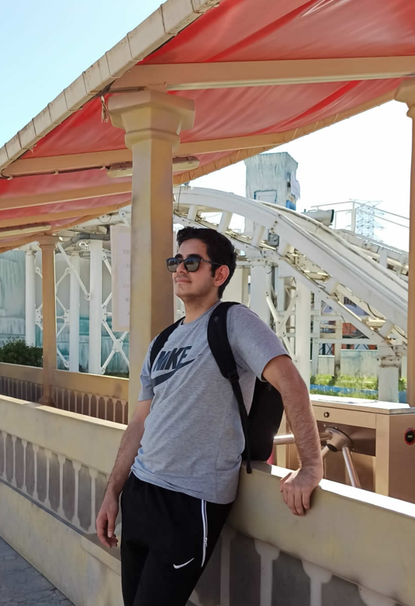

Ben Suat SULU , Adana doğumluyum ve Adanada yaşıyorum 19 yaşındayım.
Üniversitede Yönetim bilişim sistemleri
bölümünü okuyorum. Web tasarıma ilgim Lisede okuduğum bölüm ile birlikte başladı. Boş zamanlarımda Bisiklet sürmekten hoşlanırım ve Dil öğrenmeye gayret gösteririm.
Herhangi bir konu hakkında araştırmayı ve o konuyu öğrenmeyi severim. Vaktim olduğunda Crypto ve Blockchain teknolojisi ile ilgilenirim.
